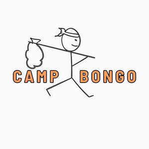
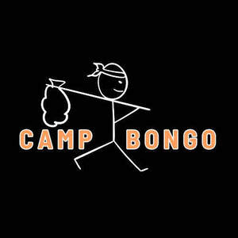

Trade Mark Journal No.2025/030 25 July 2025
UK00004196001 28 April 2025 (18,25,41,43)
Mark 1

Mark 2

- Class 18
- Animal apparel; Dog apparel.
- Class 25
- Gloves for apparel; Jerseys [clothing]; Clothing; Sportswear; Clothing for sports; Sports clothing; Ready-to-wear clothing; Jackets being sports clothing; Knitwear [clothing]; Sports garments; Parts of clothing, footwear and headgear; Men's clothing; Embroidered clothing; Jackets [clothing]; Woolen clothing; Sports clothing [other than golf gloves]; Leisure clothing; Headbands [clothing]; Headbands for clothing; Clothing for leisure wear; Casual clothing; Denims [clothing]; Garments for protecting clothing; Shorts [clothing]; Footwear for sports; Sports footwear; Footwear; Aprons [clothing]; Wristbands [clothing]; Gloves [clothing]; Gloves as clothing; Windproof clothing; Plush clothing; Quilted jackets [clothing]; Outerwear; Knitted clothing; Water-resistant clothing; Linen clothing; Shoes for leisurewear; Footwear for women; Women's clothing; Ready-made clothing; Footwear for men; Party hats [clothing]; Jackets (Stuff -) [clothing]; Stuff jackets [clothing]; Leisure footwear; Belts [clothing]; Belts for clothing; Rainproof clothing; Casual footwear; Beach clothing.
- Class 41
- Holiday camp services; Holiday camp amusement centre services; Recreational camp services; Recreational park services; Camp services (Holiday -) [entertainment]; Holiday camp services [entertainment]; Camp services (Sport -); Park services (Amusement -).
- Class 43
- Booking of campground accommodation; Providing campground facilities; Campground facilities (Providing -); Tourist camp services [accommodation]; Rental of tents; Camp services (Holiday -) [lodging]; Holiday camp services [lodging]; Reservation of tourist accommodation; Rental of holiday cabins; Reservation of temporary accommodation in the nature of holiday homes; Guesthouse; Providing temporary trailer park facilities; Reservation of temporary accommodation; Providing temporary lodging at holiday camps; Holiday lodgings; Provision of camp ground facilities; Rental of holiday accommodation; Rental of vacation accommodation; Accommodation reservations; Temporary accommodation services provided by holiday camps; Accommodation reservations (Temporary -); Temporary accommodation reservations; Reservations (Temporary accommodation -); Rental of temporary accommodation; Accommodation (Rental of temporary -); Rental of accommodation [temporary]; Booking services for holiday accommodation; Reservation services for the booking of accommodation; Rating holiday accommodation.
Rebecca Fergus
Kerry Leah Harvey